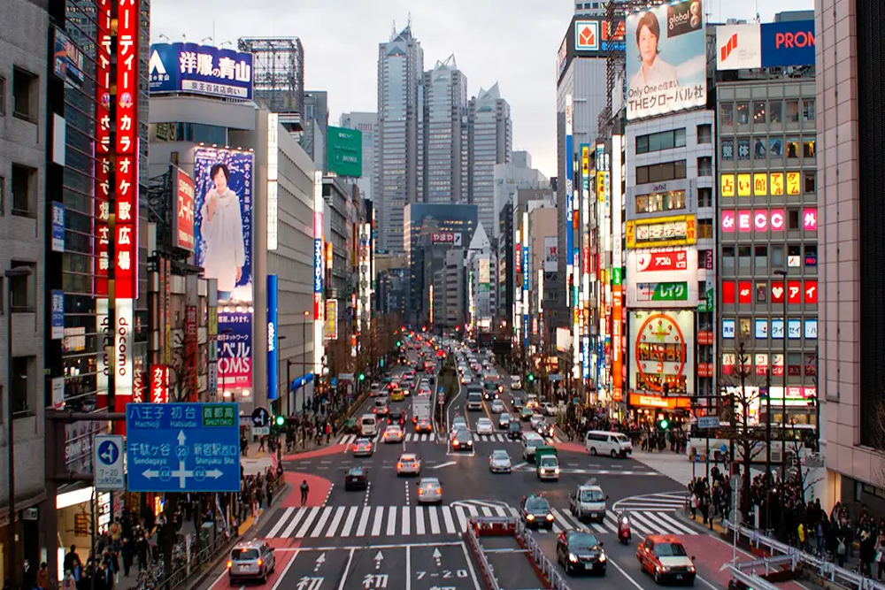
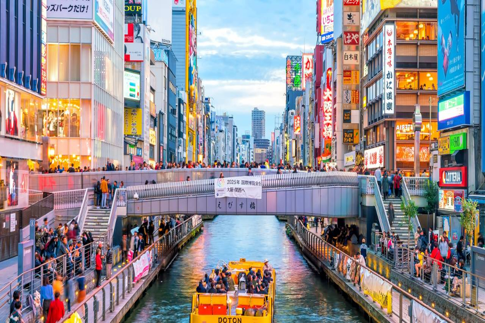
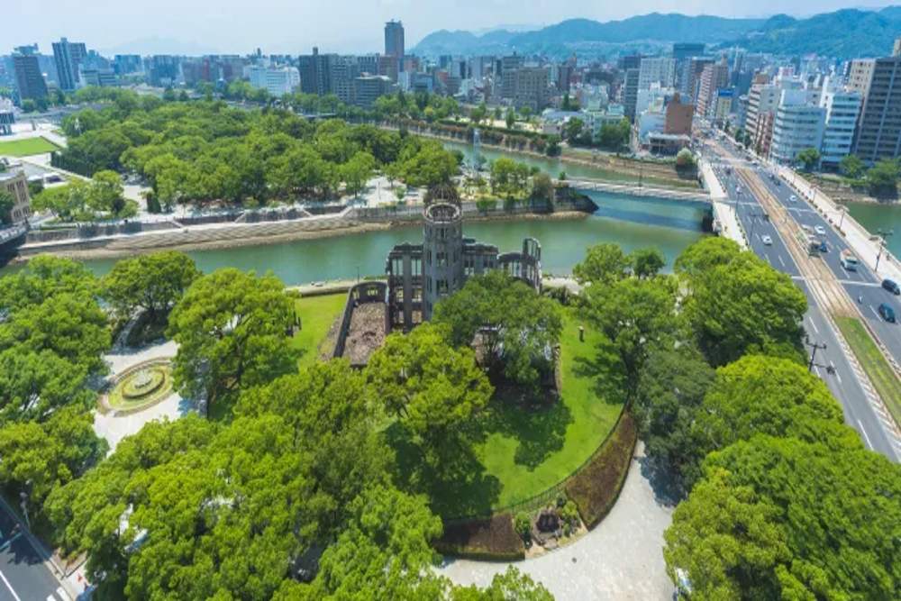
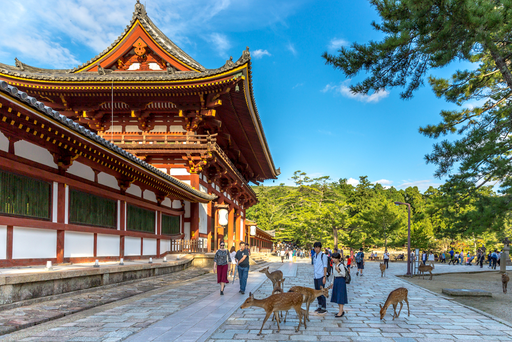

🌸 March – May (Spring): The best time to visit with cherry blossoms (sakura) and pleasant weather.
☀️ June – August (Summer): Warm season with festivals, but can be hot and humid.
🍁 September – November (Autumn): Beautiful fall colors with cool and comfortable weather.
❄️ December – February (Winter): Cold season, best for snow, skiing, and fewer crowds.



